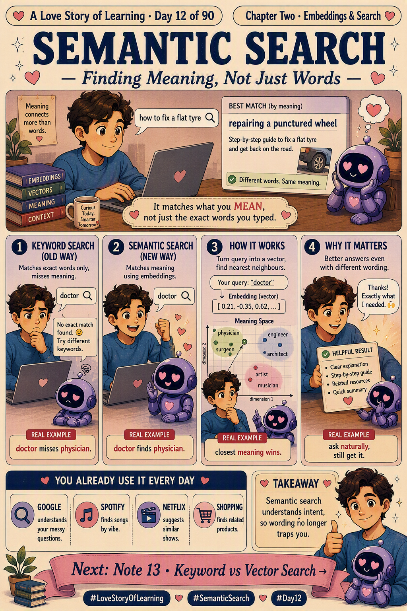

📜 The 30-second brief
Semantic search finds results based on meaning instead of exact keyword matches. It turns your query into an embedding (Note 11!), then looks for the documents whose embeddings sit closest in meaning-space. So a search for "how to fix a flat tyre" can return an article titled "repairing a punctured wheel" — zero shared keywords, same intent.
Old keyword search asked "do the words match?" Semantic search asks the better question: "do the meanings match?" That shift is what makes modern AI search feel like it actually understands you. 💕
💌 A fresh analogy: the helpful librarian
Picture two librarians. The first is literal: you ask for a book about "feeling low" and she only checks for books with the exact words "feeling low" on the cover — and finds nothing. 📚
The second librarian understands what you mean. She hears "feeling low" and immediately brings you books on sadness, mood, and mental health — even though none use your exact words. The second librarian is semantic search. She matches your intent, not your spelling. 💛
🔍 Keyword vs semantic search
| Keyword search (old way) | Semantic search (new way) | |
|---|---|---|
| Matches on | Exact words | Meaning (via embeddings) |
| "doctor" finds… | only "doctor" | "physician", "GP", "medic" too |
| Different wording | often misses it | still finds it |
| Typos / synonyms | struggles | handles gracefully |
| Feels like | Ctrl+F | a friend who gets you |
⚙️ How it works, step by step
- Embed everything. Every document is turned into a vector ahead of time and stored.
- Embed the query. When you search, your question becomes a vector too.
- Find nearest neighbours. The system finds the document vectors closest to your query vector.
- Return by meaning. The closest meanings come back first — even with totally different words.
🧵 How this builds on our story
| Semantic search… | …connects to | The thread |
|---|---|---|
| Runs on embeddings | Note 11 · Embeddings | It's literally yesterday's meaning-map, put to work. No embeddings, no semantic search. |
| Fixes an old limit | Note 10 · Knowledge Cutoff | By retrieving real documents, it lets AI answer from current facts instead of frozen memory. |
| Leads to the comparison | Note 13 · Keyword vs Vector Search | Tomorrow we go deeper on when to use each — and why the best systems blend them. 💕 |
💡 Why it matters
- Better help & support. Users get the right answer even when they phrase things "wrong."
- Smarter internal search. Find that one runbook or doc by describing it, not guessing keywords.
- The retrieval in RAG. Semantic search is how a RAG system picks the right context to feed the model.
- Multilingual reach. Meaning-based matching can even connect ideas across languages.
🏭 Real-world example: the runbook rescue
It's 2 a.m., an alert fires, and you search your internal docs for "payments service timing out." Keyword search finds nothing — because the actual runbook is titled "handling latency spikes on the billing API." Different words, same problem. Semantic search understands the meaning, surfaces the right runbook instantly, and you're fixing the incident instead of hunting for the doc. That's the difference between matching words and matching intent. 🎯
⚠️ Common misconceptions
- "Semantic search replaces keyword search." Not quite — the best systems combine both (that's hybrid search, Note 19).
- "It always understands perfectly." No — it's only as good as the embedding model and the data.
- "It's just fuzzy keyword matching." No — it matches meaning, not misspellings of the same word.
- "It needs no setup." No — documents must be embedded and stored (often in a vector database, Note 15).
🎓 Quick self-test
- What does semantic search match on?
Meaning, using embeddings — not exact keywords. - What are the core steps?
Embed documents, embed the query, find nearest neighbours, return by meaning. - Why can it beat keyword search?
It finds results with different wording but the same intent. - How does it link to RAG?
It's the retrieval step that picks the right context to feed the model.
📚 Key terms
- Semantic search — finding results by meaning rather than exact words.
- Query vector — the embedding of your search question.
- Nearest neighbours — the closest vectors in meaning-space to your query.
- Intent — what you actually mean, beyond the literal words.
- Keyword search — traditional exact-word matching.
⚡ 60-second flashcard
| Define it in one breath | Searching by meaning, not exact words. |
| The mental model | The librarian who understands what you mean, not just what you said. |
| The magic move | "flat tyre" finds "punctured wheel." |
| Runs on | Note 11 Embeddings. |
| Fixes | Keyword search missing different wording. |
| Leads to | Note 13 Keyword vs Vector Search. |
| Interview line | "Semantic search embeds the query and finds nearest-neighbour documents by meaning." |
🖼️ Today's cheat sheet

✨ Next spark
We've praised semantic search — but keyword search isn't dead. Sometimes the exact word really matters (think product codes or names). Tomorrow we put them head to head and see why the smartest systems use both. That's Note 13 · Keyword vs Vector Search. 💕